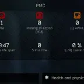

Mod
SPT inRaid Timer
- Downloads
- 1,107
- Favourites
- 0
- Mod lists
- 3
I’ve been wanting this kind of mod since playing SPT and finally after weeks of hard work (mostly my son but pffft) It’s finally here.
Thank you Son. You still owe me for your years at uni but hey we might call it quits after this one xxxx
The Mod keeps track of all your inRaid game times until you wipe the account again.
If you’re going to use the mod I’d suggest starting with a new player profile and then go from there. You can save your existing profile with SPT-Profile-Editor.
I’ve tested this with 4 raids and the timer is working.
Just drop the folder in to the user/mods folder
Cheers
Version
1.0.0
SPT ~3.10.0
Fika: unknown
1,107 downloadsUnknown size
No description was available in the snapshot.